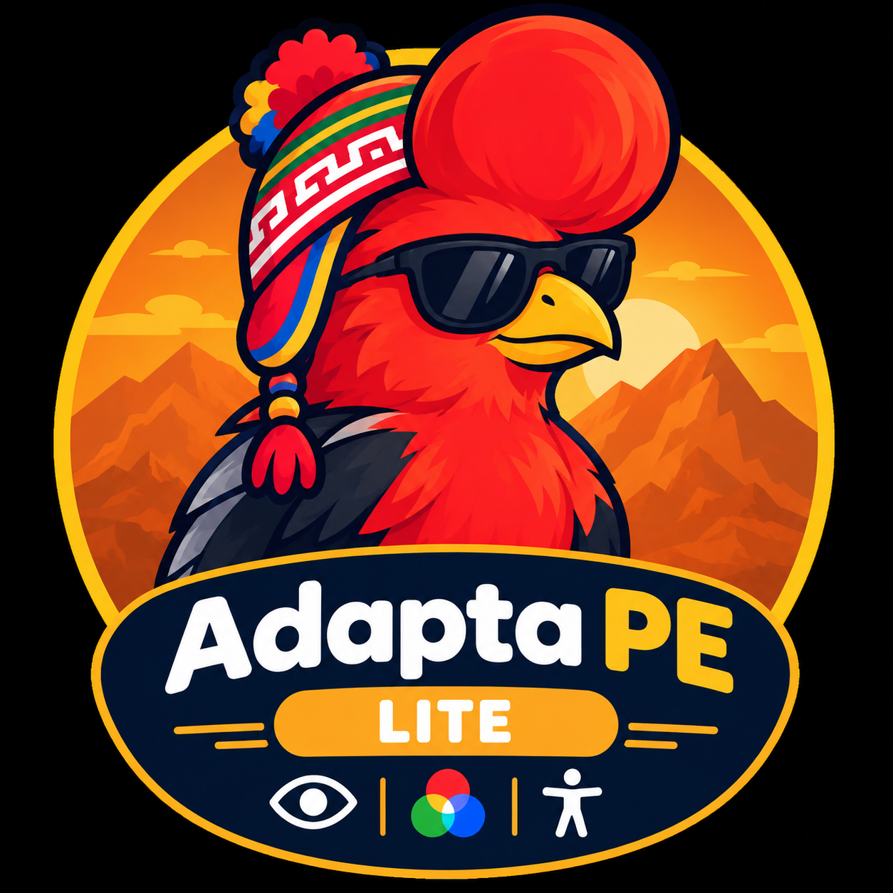

AdaptaPE Lite
Ya puedes usar AdaptaPE Lite
Funciona en las pestañas que ya tenías abiertas, sin recargarlas.
- Activa aquí una ayuda. Puedes cambiarla cuando quieras.
- Si Chrome pide permiso para el micrófono, elige «Permitir».
- Para tener el panel a mano, pulsa el icono de extensiones (pieza de rompecabezas) junto a la barra de direcciones y luego el alfiler de AdaptaPE Lite.
Cargando tus ajustes…
Di «Computadora», espera el sonido y da tu orden, por ejemplo «Abre YouTube».
Los filtros de color, el idioma de voz y la mascota están en el panel de AdaptaPE Lite.